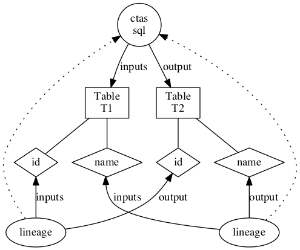

Hive Model
Hive model includes the following types:
- Entity types:
- hive_db
- super-types: !Asset
- attributes: qualifiedName, name, description, owner, clusterName, location, parameters, ownerName
- hive_table
- super-types: DataSet
- attributes: qualifiedName, name, description, owner, db, createTime, lastAccessTime, comment, retention, sd, partitionKeys, columns, aliases, parameters, viewOriginalText, viewExpandedText, tableType, temporary
- hive_column
- super-types: DataSet
- attributes: qualifiedName, name, description, owner, type, comment, table
- hive_storagedesc
- super-types: Referenceable
- attributes: qualifiedName, table, location, inputFormat, outputFormat, compressed, numBuckets, serdeInfo, bucketCols, sortCols, parameters, storedAsSubDirectories
- hive_process
- super-types: Process
- attributes: qualifiedName, name, description, owner, inputs, outputs, startTime, endTime, userName, operationType, queryText, queryPlan, queryId, clusterName
- hive_column_lineage
- super-types: Process
- attributes: qualifiedName, name, description, owner, inputs, outputs, query, depenendencyType, expression
- hive_db
- Enum types:
- hive_principal_type
- values: USER, ROLE, GROUP
- hive_principal_type
- Struct types:
- hive_order
- attributes: col, order
- hive_serde
- attributes: name, serializationLib, parameters
- hive_order
Hive entities are created and de-duped in Atlas using unique attribute qualifiedName, whose value should be formatted as detailed below. Note that dbName, tableName and columnName should be in lower case.
hive_db.qualifiedName: <dbName>@<clusterName> hive_table.qualifiedName: <dbName>.<tableName>@<clusterName> hive_column.qualifiedName: <dbName>.<tableName>.<columnName>@<clusterName> hive_process.queryString: trimmed query string in lower case
Hive Hook
Atlas Hive hook registers with Hive to listen for create/update/delete operations and updates the metadata in Atlas, via Kafka notifications, for the changes in Hive. Follow the instructions below to setup Atlas hook in Hive:
- Set-up Atlas hook in hive-site.xml by adding the following:
<property>
<name>hive.exec.post.hooks</name>
<value>org.apache.atlas.hive.hook.HiveHook</value>
</property>
- untar apache-atlas-${project.version}-hive-hook.tar.gz
- cd apache-atlas-hive-hook-${project.version}
- Copy entire contents of folder apache-atlas-hive-hook-${project.version}/hook/hive to <atlas package>/hook/hive
- Add 'export HIVE_AUX_JARS_PATH=<atlas package>/hook/hive' in hive-env.sh of your hive configuration
- Copy <atlas-conf>/atlas-application.properties to the hive conf directory.
The following properties in atlas-application.properties control the thread pool and notification details:
atlas.hook.hive.synchronous=false # whether to run the hook synchronously. false recommended to avoid delays in Hive query completion. Default: false atlas.hook.hive.numRetries=3 # number of retries for notification failure. Default: 3 atlas.hook.hive.queueSize=10000 # queue size for the threadpool. Default: 10000 atlas.cluster.name=primary # clusterName to use in qualifiedName of entities. Default: primary atlas.kafka.zookeeper.connect= # Zookeeper connect URL for Kafka. Example: localhost:2181 atlas.kafka.zookeeper.connection.timeout.ms=30000 # Zookeeper connection timeout. Default: 30000 atlas.kafka.zookeeper.session.timeout.ms=60000 # Zookeeper session timeout. Default: 60000 atlas.kafka.zookeeper.sync.time.ms=20 # Zookeeper sync time. Default: 20
Other configurations for Kafka notification producer can be specified by prefixing the configuration name with "atlas.kafka.". For list of configuration supported by Kafka producer, please refer to Kafka Producer Configs
Column Level Lineage
Starting from 0.8-incubating version of Atlas, Column level lineage is captured in Atlas. Below are the details
Model
- ColumnLineageProcess type is a subtype of Process
- This relates an output Column to a set of input Columns or the Input Table
- The lineage also captures the kind of dependency, as listed below:
- SIMPLE: output column has the same value as the input
- EXPRESSION: output column is transformed by some expression at runtime (for e.g. a Hive SQL expression) on the Input Columns.
- SCRIPT: output column is transformed by a user provided script.
- In case of EXPRESSION dependency the expression attribute contains the expression in string form
- Since Process links input and output DataSets, Column is a subtype of DataSet
Examples
For a simple CTAS below:
create table t2 as select id, name from T1
The lineage is captured as

Extracting Lineage from Hive commands
* The HiveHook maps the LineageInfo in the HookContext to Column lineage instances
* The LineageInfo in Hive provides column-level lineage for the final FileSinkOperator, linking them to the input columns in the Hive Query
NOTES
- Column level lineage works with Hive version 1.2.1 after the patch for HIVE-13112 is applied to Hive source
- Since database name, table name and column names are case insensitive in hive, the corresponding names in entities are lowercase. So, any search APIs should use lowercase while querying on the entity names
- The following hive operations are captured by hive hook currently
- create database
- create table/view, create table as select
- load, import, export
- DMLs (insert)
- alter database
- alter table (skewed table information, stored as, protection is not supported)
- alter view
Importing Hive Metadata
Apache Atlas provides a command-line utility, import-hive.sh, to import metadata of Apache Hive databases and tables into Apache Atlas. This utility can be used to initialize Apache Atlas with databases/tables present in Apache Hive. This utility supports importing metadata of a specific table, tables in a specific database or all databases and tables.
Usage 1: <atlas package>/hook-bin/import-hive.sh
Usage 2: <atlas package>/hook-bin/import-hive.sh [-d <database regex> OR --database <database regex>] [-t <table regex> OR --table <table regex>]
Usage 3: <atlas package>/hook-bin/import-hive.sh [-f <filename>]
File Format:
database1:tbl1
database1:tbl2
database2:tbl1